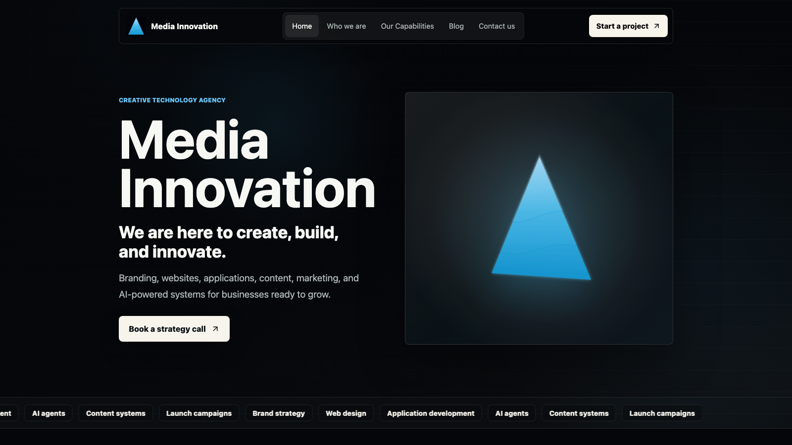

A six-service creative-technology offering risked reading as unfocused — a generic "we do everything" agency template.
Case study
Media Innovation
A five-page React SPA for Media Innovation, a creative-technology agency — turning a six-service, AI-forward offering into one clear brand story with a self-updating industry blog.
I owned brand positioning, UX/UI direction, and the full React front-end build through to deployment.
Create / Build / Innovate reorganizes every service into a single, repeatable structure used on every page.
Shipped with a self-updating industry blog and zero manual content upkeep.

My contribution
- Defined the brand positioning and the repeatable Create / Build / Innovate system used across every page.
- Designed and built a 5-route React SPA — Home, Who We Are, Capabilities, Blog, Contact — with React Router.
- Built a build-time RSS aggregation pipeline so the Blog stays current without any manual writing.
- Directed the dark, cyan-accented visual system, including the animated inline SVG logo mark.
- Diagnosed and resolved a post-launch DNS misconfiguration so the live domain resolved correctly.
Challenge
Media Innovation needed a digital home that could carry six very different service lines — branding, web/app development, AI agents, content production, marketing, and innovation consulting — without reading as an unfocused, generic agency template.
As a new, AI-forward creative-technology brand, the site also had to earn technical credibility on first impression, make an abstract "AI agents" offering feel concrete, and stay visibly current without a dedicated content team to maintain a blog.
Approach
- Organized all six services around one repeated 3-verb operating system — Create, Build, Innovate — reused in the hero tagline, the Who We Are value grid, and the homepage capability tabs.
- Kept navigation intentionally flat across five routes so every primary path is one click from the header, with no dropdowns hiding services.
- Gave the AI offering a concrete visual anchor — an orbit diagram tying CRM, Web, Ads, Data, and Ops to specific agent use cases — instead of leaving it as a buzzword.
- Replaced a manually written blog with a build-time RSS aggregation pipeline pulling from real industry sources, categorized to match the agency's own service lines.
Information architecture
Home carries the full narrative in one scroll: hero, proof, services, selected work, AI systems, process, and a closing call to action.
Who We Are makes the case for the brand; Capabilities lets a visitor go deep on any of the six services or four delivery lanes.
The live Blog keeps the brand credible between visits, and Contact opens with the business goal instead of a blank form.
Design decisions
An auto-rotating, hoverable tab system (Strategy, Identity, Platforms, Content, AI Systems) lets visitors watch a passive preview or take control — solving "six services is too many to list flat" without hiding anything behind a click.
A fixed scroll-progress bar plus intersection-triggered reveal-on-scroll paces the long homepage instead of dumping every section at once.
The Contact page opens with "start with the business goal" instead of a generic form, paired with a Best For / We Can Discuss sidebar so visitors can self-qualify before reaching out.
Engineering decisions
- Built as a React + Vite single-page app with React Router for fully client-side routed navigation across five routes.
- Wrote a build-time script that fetches, deduplicates, and sorts real industry RSS feeds into a static JSON file, so the Blog loads fast and never depends on a third-party feed's uptime at runtime.
- Added explicit loading / ready / error states to the blog feed instead of letting a failed fetch show a blank page.
- Used semantic landmarks, aria-labels on icon-only buttons, and role="tablist" / aria-selected on the capability and blog-filter tabs.
Visual system
The visual system commits to a near-black canvas rather than a generic light agency template, with a cyan/blue gradient carrying through the animated logo mark, the hero visual, and every primary call to action — giving the AI/tech positioning a literal, repeated visual signature.
The logo itself is an animated inline SVG (three gradient bands plus a glow filter) rather than a static image — crisp at any size, and it doubles as a subtle motion detail in the header and hero.
Selected product direction
Outcome
Media Innovation launched as a complete brand and product system — positioning, a five-route site, and a self-sustaining content channel — designed and built solo.
- Reorganized six service lines into one memorable 3-verb system used consistently across every page.
- Removed ongoing content overhead by automating the Blog at build time instead of requiring manual writing.
- Diagnosed and resolved a post-launch DNS misconfiguration so the live domain resolved correctly.